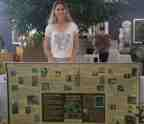

2014 Newsletters
If you would like to receive North Head Sanctuary Foundation newsletters via your email, just ask to be put on the mailing list by contacting:
northhead@fastmail.com.au

Tuesday Nursery Group
January/February 2014
General Meeting; Welcome to new AWC researcher; The Sue Halmagyi Endangered Eastern Suburbs Banksia Scrub regeneration trial; Native Plant Nursery; Amperea xiphoclada; Ant lions rule; Third Cemetery - Annie Egan.

Planting the bank
March 2014
ESBS talk; walks for children; Planting in the bank by Seargeants' Mess; My North Head - Katie Meyer; What's underground at North Head by Geoff Lambert; Back in Time - by Steve Johnson; Goodenia stelligera.

Katie at the stall
April 2014
Katie and Kathy represent NHSF at Farmhouse Montessori School; walks for children, Clean up Australia event on North Head; Congratulations to Eco Award winners; Fauna surveys. Plant Nursery news; Black rat; Hibbertia empetrifolia; Spider shots; Third Cemetery - Albert Blake, aged 38.
May 2014
General Meeting; Children's activities; Yellow-tailed Black Cockatoo; Centipedes and Millipedes; Phallus indusiatus; Third Cemetery - Pneumonic Plague.
June 2014
Walk and talk on North Head; Military battery and the hanging swamp; Acetosa sagittata or Turkey rhubarb; Third Cemetery - burial of 13 soldiers and 2 nurses; Colonial hospital.
July 2014
Notice of AGM; Astroloma pinifolium; Congratulations Jim - the coach now in England; Tawny frogmouths; Walking in the rain; Third Cemetery - smallpox 1892, influenza in 1919.
August 2014
Notice of Annual General Meeting; Facilities in Bandicoot Heaven; Petrophile sessilis; Bush Rat reintroduction; Native Plant Nursery; Flying Ants; Third Cemetery - Sidney Pepper; Stoney Range Botanic Gardens Spring Festival.
September 2014
Spring Wildflower Walks on North Head; Manly Hospital site survey; Nursery news; North Head (whale watching) by David Jenkins; Heliochrysum elatum; Family Fun Day at Q Station; Are you a Muggle?; Committee elected at AGM; Third Cemetery - Cecil Pepper.

Revegetation at North Fort
October 2014
Next General Meeting - Art of North Head; Prickles and Spikes; Spring - baby birds; Comesperma ericinum; revegetation progress at North Fort near the toilet block; Third Cemetery - Hector Spence.

Spring Walk
November 2014
Next General Meeting Nov 26 at 7pm; Nature Walks for children; Spring Wildflowers; Gonocarpus micranthus; About Ants; Preparing for more study of effects of fire on natural bushland; Third Cemetery - Edward James Fury.

Ant diggings
December 2014
Ocean Care Day; In memory of Sue; Bleached and unbleached sand on North Head; Melaleuca armillaris; New Signage; Plover update; Thank you Katie; Third Cemetery - Samain; Quarantine Station 1921.